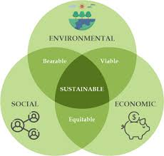

Green coding is based on the principles of an organization, supported by three pillars used to write, develop, and run code.
The first pillar focuses on what is generated from the code itself and whether it is efficient enough in terms of energy invested.
The second pillar addresses how the code is generated and whether the development lifecycle is efficient. It also considers whether a similar code could be generated with minimal energy consumption.
The third pillar examines where the software is operated and whether it requires more energy to run the code.
Green coding practices often lead to more efficient algorithms and optimized code, resulting in reduced energy consumption during software execution, particularly in data centers.
By minimizing energy consumption, green coding contributes to a lower carbon footprint, reducing greenhouse gas emissions associated with energy-intensive software development and operation processes.
Optimized code and reduced energy consumption can result in lower operational costs, especially in cloud computing environments where resources are billed based on usage.
Green coding emphasizes effective resource management, including memory, CPU, and network resources, leading to better overall system performance and responsiveness.
By designing applications to scale efficiently and avoiding resource-intensive practices, green coding enables applications to handle increased workloads without a proportional increase in energy consumption.
Adopting green coding practices enhances the public perception of an organization, as consumers and stakeholders increasingly value environmentally responsible practices.
As environmental concerns grow, regulatory bodies may introduce standards and regulations related to energy consumption and sustainability. Green coding practices position organizations to comply with current and future environmental regulations.